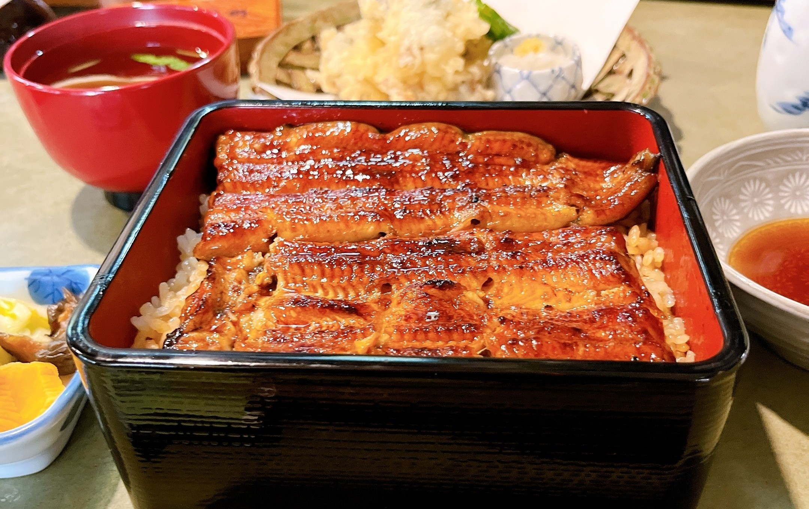
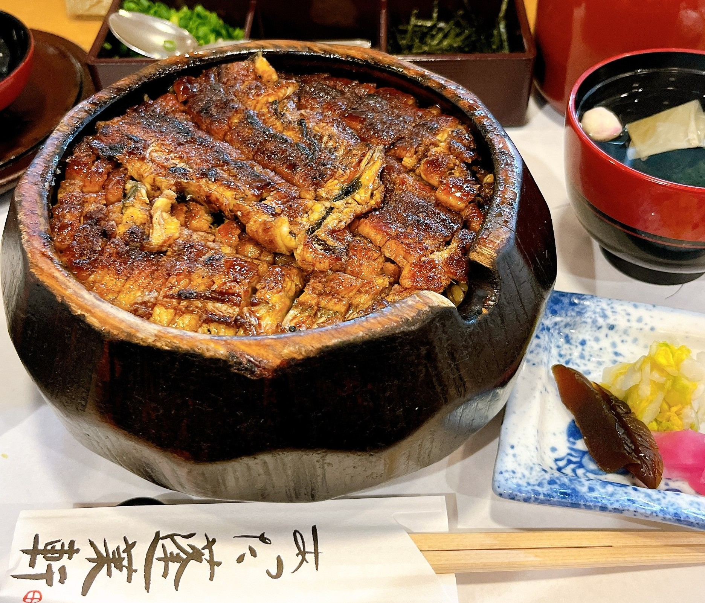

～愛知県＆静岡県編～
2022年11月15日～17日に愛知県と静岡県を旅行した記事になります！
出発時間の関係で到着が夜だったため夜ご飯からの紹介となりますが
愛知県、静岡県旅行のモデルコースとして参考になれば幸いです！
▶ 今回の旅の目次
のどぐろ御膳を堪能！浜潮!
浜松の老舗！うなぎの藤田！

静岡県で有名なものと言えば浜松のうなぎ！
今回はうなぎの藤田さんのうな重を頂きました。
ふっくらなうなぎとタレの香ばしさが最高の一品でした！
お店：うなぎの藤田 本店
営業時間：11:30～14:00 17:00～20:30
定休日：木曜日
予約可否：予約可
駐車場：あり
TEL：053-438-1515
住所：静岡県浜松市中央区小豆餅3-21-12
URL：
食べログで見る
アマゾン：
うなぎの井口 国産うなぎ蒲焼き2尾セット
愛知を代表するひつまぶし！
あつた蓬莱軒！
愛知で一番有名なひつまぶしのあつた蓬莱軒！
薬味やお茶漬けと様々な食べ方ができるひつまぶしは
うなぎの旨味を最大限に堪能できます！お店：あつた蓬莱軒 神宮店
営業時間：11:30～14:30 16:30～20:30
定休日：火曜日
予約可否：予約不可
駐車場：あり
TEL：052-682-5598
住所：愛知県名古屋市熱田区神宮2丁目10−26
URL：
ふるなび：
うなぎの返礼品を見る
名古屋の定番観光スポット！名古屋城！
金の鯱として有名な名古屋城！
荘厳な外観と豪華な内装は
当時の徳川家康の力が表れており圧巻です！
愛知県の有名回転寿司チェーン！魚魚丸！
いかがでしたでしょうか！
愛知県といえば三河産のうなぎを使用したひつまぶしや
きしめん、みそカツ、味噌煮込みうどん、カレーうどん、天むす、
名古屋コーチン、台湾ラーメンなどたくさんのご当地グルメがあります！
静岡県といえばハンバーグのさわやかが有名ですが他にも
海鮮系は浜松のうなぎや桜えびやシラス、焼津港のマグロがあり、
日本三大銘茶の静岡茶を使用した茶そばも有名です！
観光名所も豊富で名古屋城や犬山城、熱田神宮以外にも
レゴランドやジブリパークといったお子様も楽しめる施設も豊富です！
東海オンエア好きの方は岡崎観光は特にオススメで
僕も暴れん坊チキンで射り口さんと出っ歯さんと写真を撮ったことがあり
東海オンエア好きにとっては最高の思い出になりました！
今後愛知県や静岡県の旅行に興味のある方の参考になれば幸いです！
愛知県といえば三河産のうなぎを使用したひつまぶしや
きしめん、みそカツ、味噌煮込みうどん、カレーうどん、天むす、
名古屋コーチン、台湾ラーメンなどたくさんのご当地グルメがあります！
静岡県といえばハンバーグのさわやかが有名ですが他にも
海鮮系は浜松のうなぎや桜えびやシラス、焼津港のマグロがあり、
日本三大銘茶の静岡茶を使用した茶そばも有名です！
観光名所も豊富で名古屋城や犬山城、熱田神宮以外にも
レゴランドやジブリパークといったお子様も楽しめる施設も豊富です！
東海オンエア好きの方は岡崎観光は特にオススメで
僕も暴れん坊チキンで射り口さんと出っ歯さんと写真を撮ったことがあり
東海オンエア好きにとっては最高の思い出になりました！
今後愛知県や静岡県の旅行に興味のある方の参考になれば幸いです！